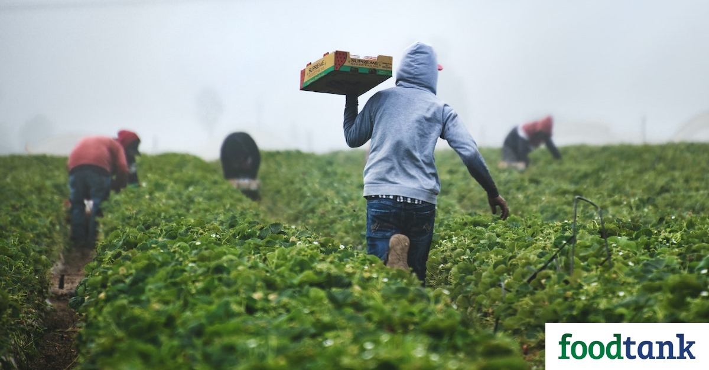

Helping farmers benefit through various sectors and resources
Build a platform to raise awareness about the importance of farming and provide resources and support to farmers. The platform offers information and opportunities to enhance their livelihood and connect with different sectors.